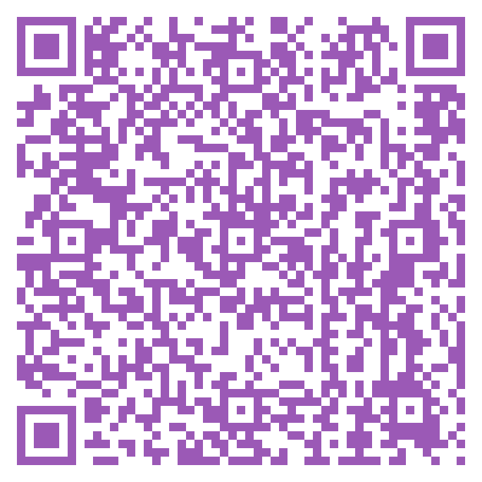
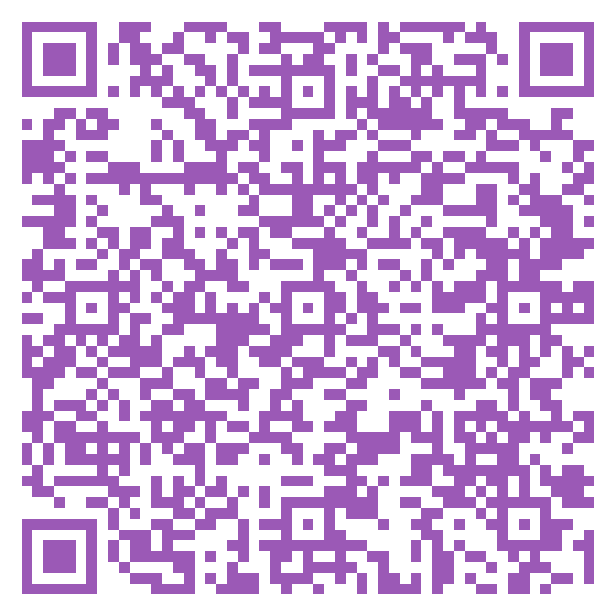

De-escalation support for hard conversations
Beta testing — pick your platform below

Scan with your Android camera

Scan from inside the Expo Go app
A voice-first app for couples, family, and partners who want to communicate better during hard conversations — especially for people with ADHD, anxiety, autism, or trauma who need time to process before responding.
• See the tone of an incoming message before you listen, so you can brace and breathe.
• Get calmer ways to say what you want before you send it.
• Type instead of speaking when you're overwhelmed — it converts to natural voice.
• End-to-end encrypted. Auto-deletes after both have listened.